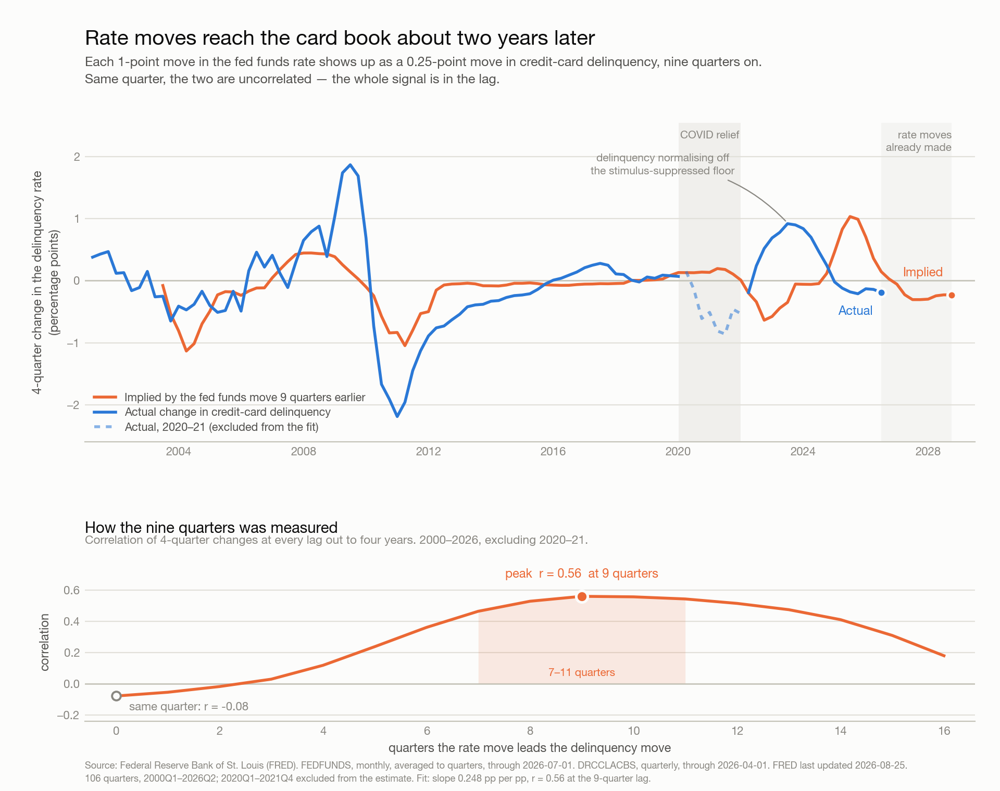

The federal funds rate and the credit-card delinquency rate move together, but not at the same time. In the same quarter they are uncorrelated — r = −0.08, statistically indistinguishable from nothing. Correlation climbs steadily with the lag and peaks nine quarters out, at r = 0.56. Each 1-point move in the policy rate arrives as roughly a 0.25-point move in delinquency, about two and a quarter years later.
The lag is the whole finding. A risk team reading rates and delinquency off the same quarter's dashboard sees no relationship, concludes there isn't one, and misses a signal that was already two years in the post.
Three things make the nine quarters credible rather than a chance peak. The correlation profile is a smooth single-peaked curve, not a spiky one — every lag from 7 to 11 quarters clears r = 0.46, so the estimate is a broad band, not a knife edge. It does not depend on how the changes are measured: 1-, 2- and 4-quarter differences all peak at exactly 9 quarters, 6-quarter differences at
preserve the lag structure) puts the median peak at 9 quarters.
The honest limit is that the same bootstrap's 90% interval runs from 1 to 12 quarters. The central estimate is well-determined across the full 25-year sample; any single cycle is not.
Data. FRED, Federal Reserve Bank of St. Louis. FEDFUNDS (Federal Funds Effective Rate, monthly, averaged into quarters) and DRCCLACBS (Delinquency Rate on Credit Card Loans, All Commercial Banks, quarterly). 106 aligned quarters, 2000Q1–2026Q2. FEDFUNDS observations through 2026-07; DRCCLACBS through 2026Q2; FRED last updated 2026-08-25. Retrieved 2026-08-26.
Method. Both series are near-unit-root in levels, so correlating levels measures shared trend rather than transmission. The analysis works in 4-quarter changes and cross-correlates ΔFEDFUNDS(t) against ΔDRCCLACBS(t+k) for k = 0…16.
One window is excluded. 2020Q1–2021Q4 is a structural break, not noise: the funds rate went to zero and delinquency fell hard, to an all-time low of 1.53% in 2021Q3, because of CARES forbearance and three rounds of stimulus. Those move together for reasons unrelated to the rate channel, and they invert its sign. Including them drags the peak to 8 quarters and the correlation down to 0.42. The window is shown on the chart, dashed, and excluded from the estimate.
| Measure | Value |
|---|---|
| Peak lag, 2000–2026 ex. 2020–21 | 9 quarters (r = 0.56) |
| Peak lag, full sample incl. 2020–21 | 8 quarters (r = 0.42) |
| Same-quarter correlation | −0.08 |
| Lags clearing r = 0.46 | 7–11 quarters |
| Bootstrap median peak (90% interval) | 9 quarters (1–12) |
| Slope at the peak | 0.248 pp delinquency per 1 pp of rate |
| Variance explained (r²) | 0.31 |
Sub-periods. The lag is stable where there is enough policy variation to measure it, and unmeasurable where there isn't.
| Window | Peak lag | r | Range of 4-qtr rate moves |
|---|---|---|---|
| 2000–2007, pre-GFC | 7 quarters | 0.73 | 6.4 pp |
| 2008–2014, GFC and recovery | 8 quarters | 0.94 | 4.1 pp |
| 2015–2019, pre-COVID | 0 quarters | 0.28 | 1.6 pp |
| 2022–2026, hiking cycle | 1 quarter | 0.95 | 5.4 pp |
Two of these need reading with care, and neither overturns the headline. 2015–2019 contains only 1.6 points of rate variation across five years — there is barely a policy signal to lag, and the weak r = 0.28 says so. 2022–2026 genuinely looks contemporaneous, and it is the one result that argues against a nine-quarter lag. The reason is visible in the chart: credit-card delinquency spent 2022–2024 climbing back from that stimulus-suppressed 1.53% floor toward normal at the same moment the Fed was hiking. Two unrelated forces that happened to point the same way at the same time. Fitting a lag to that window measures the coincidence, not the mechanism — which is exactly why the COVID distortion has to be handled rather than averaged over.
A cruder cross-check agrees with the direction: dating the peak of each rate cycle against the peak of the delinquency wave that followed gives gaps of 4, 9, 4 and 2 quarters. That method leans on four hand-picked points and is thrown by rate plateaus — the 2023–24 peak of 5.33% held for four quarters, so "the peak" is ambiguous by a year. The cross-correlation uses all 106 observations and is the estimate to carry.
What this is not. r² = 0.31. The policy rate explains roughly a third of the variation in delinquency changes; unemployment, underwriting standards, balance growth and card-specific credit policy hold the rest. This is one input to a loss forecast with a well-measured lead time, not a forecast.
Move the policy rate from the current-quarter panel to the two-year-ahead panel. Rates and delinquency on the same dashboard row invite the conclusion that they are unrelated. They are related; the relationship is offset by nine quarters. Any loss-forecast input that reads the rate contemporaneously is reading it at the one lag where the correlation is zero.
Do not credit the current improvement to the Fed. Delinquency peaked at 3.22% in 2024Q2 and has eased to 2.85% — but the easing began in 2024Q3, and cuts only started that same quarter. At a nine-quarter lag, nothing the Fed has done since 2024 has reached the book yet. The improvement to date is the tail of the COVID normalisation and whatever tightening was done in underwriting. Attributing it to rate relief will overstate how durable it is.
The rate-driven relief is still ahead, and it is worth about 0.4 points. The funds rate has fallen from 5.33% to 3.63% since 2024. Through the fitted slope, that cumulative 1.7-point easing implies roughly 0.4 points of delinquency relief arriving between late 2026 and 2028 — on top of, not instead of, everything else acting on the book. Plan capacity and provisioning against that arriving late, not now.
Use 7–11 quarters as a scenario range, not 9 as a number. The band is broad and the bootstrap interval broader. Nine quarters is the right central case; running provisioning scenarios at seven and eleven is the right way to use it.
Re-fit only on cycles with real policy variation. 2015–2019 had 1.6 points of rate movement and produced a meaningless estimate; 2022–2026 had 5.4 points but was contaminated by the stimulus rebound. Neither should be used to recalibrate. Wait for a clean cycle, or re-fit on the full sample with the COVID window held out, as here.
Wire the pull, not the numbers. DRCCLACBS lands roughly a quarter in arrears and FRED revises. This analysis is reproducible from the API with its provenance attached; a pasted spreadsheet is not. Whatever consumes the lag downstream should re-fetch rather than inherit a hard-coded 0.248.